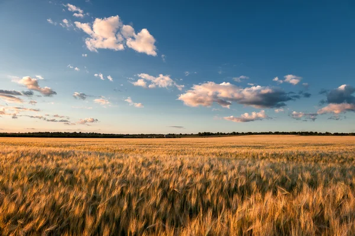
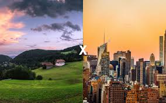

.jpeg) campo e cidade
campo e cidade
conexão campo e cidade

conexão cidade
as cidades são centros de inovação, de cultura e de economia.

conexão campo
"é responsável pela produção de ampla gama de matérias primas para as indústrias."

ambas das conexoẽs são importÂntes
"O campo fornece alimentos e matérias-primas para as cidades, enquanto as cidades oferecem produtos industrializados, serviços e mercados para os produtos do campo. Essa relação de interdependência é fundamental para o funcionamento da sociedade e para o desenvolvimento econômico e social de ambos os espaços."